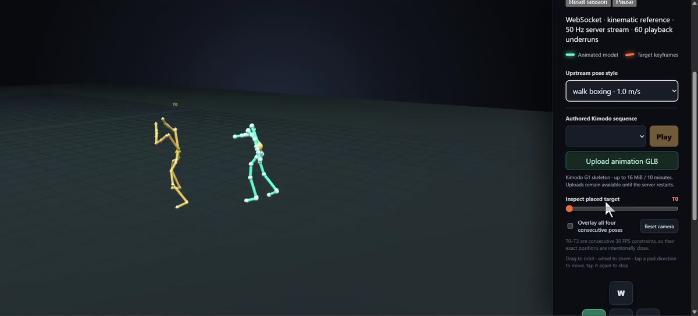

01 / Complete
G1 motion lab
Can the released model run on this laptop, and what do its controls actually change? Build record, control guide, measured demo, and a recording are available now.
Explore Project 1 →A home for projects built around the original motion-bricks.cpp repository. Project 1 runs and explains the released G1 model on this laptop. Projects 2–4 will measure performance, compare styles, and probe target-pose control. Each project asks a testable question and separates observations from claims.
Can the released model run on this laptop, and what do its controls actually change? Build record, control guide, measured demo, and a recording are available now.
Explore Project 1 →Trace input-to-pose latency, compare CPU and Vulkan, and measure peak VRAM before claiming real-time behavior.
Compare the 15 published styles under matched controls to distinguish target constraints from generated motion.
Author or alter G1 target poses directly, then test how the model responds and where it fails.
Projects 2–4 are experiments to build, not completed results. Their methods and scope may change after Project 2 establishes the performance baseline. The repository README tracks the series.
Movement, facing, and style become a short sequence of target G1 poses. The learned model predicts a continuation with root movement and joint rotations. A Go server streams it, and a browser draws an interpolated skeleton. The warm ghost is the target constraint; the mint skeleton is the generated result.
Which right-panel items alter the planner, which only inspect its targets, and why disabled physics controls matter.
Open the guide →From an empty workspace to a local server: verified downloads, the Windows link failure, the WSL build, and measured limits.
Follow the build →Watch actual local output across styles and controls. Use the guide to make a prediction before each change.
Watch the clip →
The original local screen recording was about 120 MB. The silent 1600-pixel H.264 version on this site is about 6.7 MB. It records the actual viewer, not a simulated result.
Watch with an explanation →A 461 ms first planner call and roughly 20 effective server ticks per wall-clock second in one sample are useful warnings against claiming game-ready real time. They are not a complete performance benchmark. GitHub Pages is a static learning site; the interactive model runs only on a local machine.
The experiment began with Stefan 3D AI's video “Free and Local Real-Time AI Animation - NVIDIA MotionBricks.cpp”. The research is NVIDIA MotionBricks. The implementation and G1 assets used here are from localai-org/motion-bricks.cpp, studied at commit 2727a456. This independent repository contains educational notes, local launch helpers, and a recording; it does not redistribute the model or upstream source.
For setup commands and the project files, use the README on GitHub.